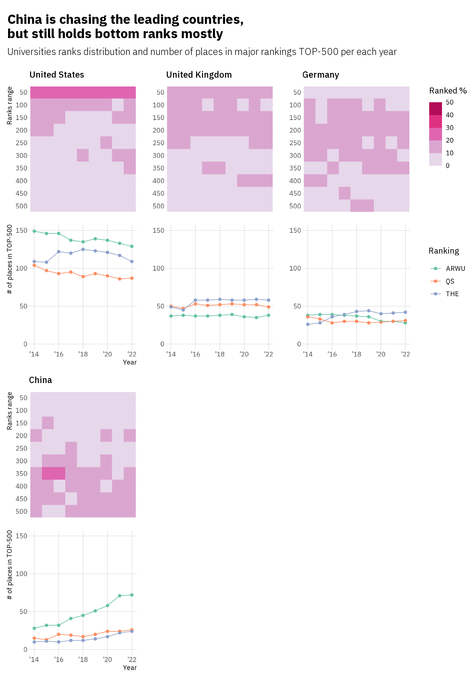

Which countries’ universities are ranked the best?
Looking at the world university rankings since 2014, comparing different countries and checking the trends and patterns in ranks distribution.
Which countries’ universities are ranked the best?
Looking at the world university rankings since 2014, comparing different countries and checking the trends and patterns in ranks distribution.
Major world university rankings and their methology
There are plenty of different university rankings available out there. University rankings are popular and attract a lot of attention in the field these days not only from the public or media, but even some governments use them as targets in their programs, like ‘Project 5-100’ in Russia.
Despite variety of existing rankings the following three are considered the most widely observed:
- Times Higher Education World University Rankings, further denoted by THE;
- The Academic Ranking of World Universities, also known as the Shanghai Ranking, ARWU;
- QS World University Rankings, QS.
All these rankings are published annually.
Even though QS and THE rankings have a common origin (from 2004 up to 2009 it was a single ranking but it was divided into two different entities in 2010), there are significant differences in methodologies used for calculation of these three.
In general an university rank depends on ranking score which is produced by weighted sum of some set of specific indicators. But each ranking defines its own constituents: different indicators categories, different number of indicators used, different indicators’ weights and different indicators’ sources (expert surveys or objective data).
As it can be seen from above THE tries to assess more indicators than QS or ARWU and assigns more weight to citations indicator than other rankings. On the other hand ARWU uses only objective data indicators, while QS heavily relies on expert surveys.
Countries with the most number of places in major university rankings
The motivation for this visualization was the idea of finding out what countries get the best ranks from the major university rankings (ARWU, THE, QS) and checking if there are any trends in ranks distribution per country. For this purpose university ranks from all three rankings were counted for each country in total. Rankings tables were limited to TOP-500 rank places and rankings published from 2014 to 2021 were used only.
So United States by a huge margin got the most number of places within TOP-500 ranks across all three major rankings combined. Almost 1/4 of all rank places were occupied by United States universities since 2014. With a simple threshold of 5%, other leading countries are the UK, Germany, and China.

Though some sort of a downtrend can be seen in the total number of places occupied by US universities in majors’ TOP-500 for the past few years, US universities still tend to represent the world’s TOP-50 mostly. From 20% to 30% of the US universities presented in the rankings were ranked in TOP-50. On the other hand, China’s gaining positions, but according to ARWU ranking mostly.
Also some points are worthy of note when looking at other than leading countries.
Despite a relatively small number of universities presented in TOP-500 across all rankings for the Netherlands, dutch universities tend to occupy higher ranks. The same pattern can be seen for Switzerland and Hong Kong. Note # of places in TOP-500 axis is of different scale range now.